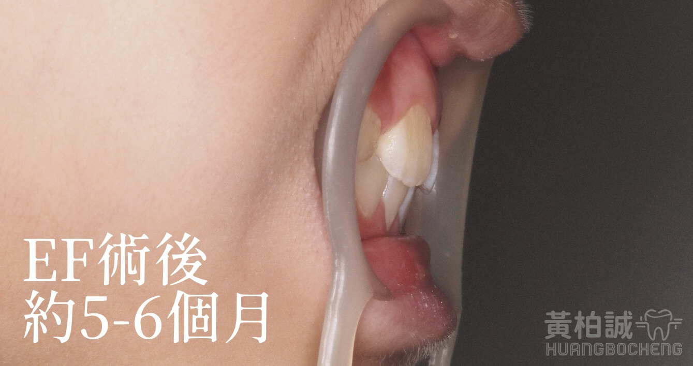
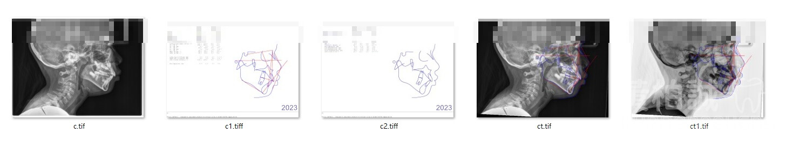
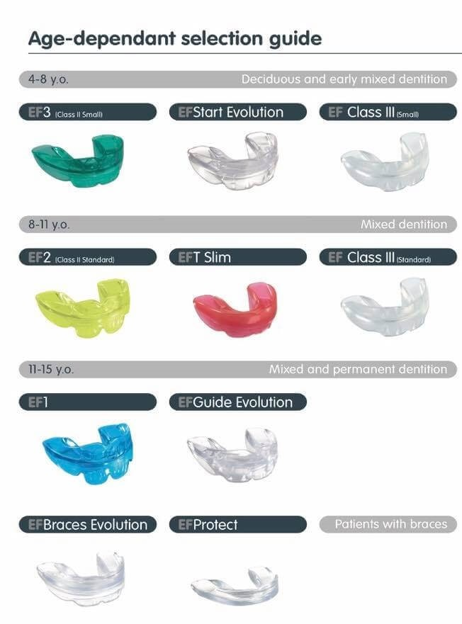
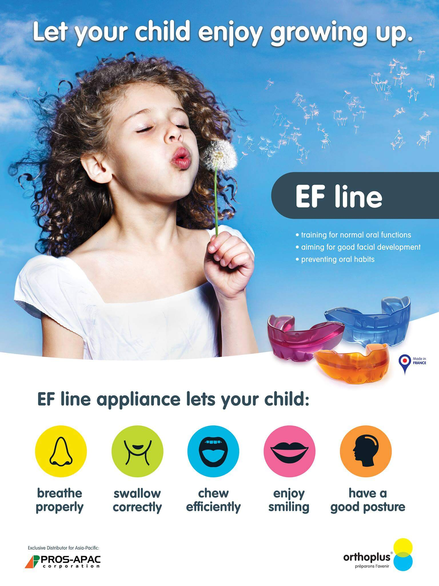

兒童有暴牙或戽斗怎麼辦？
小學是早期骨骼生長發育促進的黃金時期。
因為上顎骨發育在12歲大部分小朋友即停止了
若孩童時期有口呼吸、慢性鼻過敏、上顎或下顎的骨骼量不足的情形，就會在臨床上引發未來的深咬、暴牙、前牙壅擠或戽斗等情形。
就像停車場(骨頭空間)太小了，卻要硬塞下一大堆的車子(恆牙)，結果就會導致牙齒擁擠甚至暴牙(車子擠在一起甚至交疊)。
這時候若能及早在小學發育期進行肌功能矯正，能有機會改善骨頭量不足所引發的未來的齒列問題(停車場即時擴建)。



